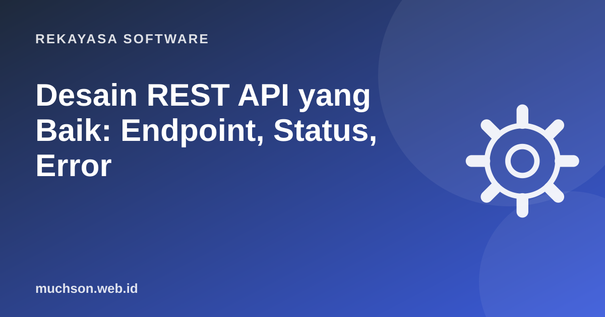

Beranda › Artikel › Rekayasa Software
Rekayasa SoftwareDesain REST API yang Baik: Endpoint, Status, Error
API adalah antarmuka untuk developer lain, termasuk tim frontend dan aplikasi mobile Anda sendiri. API yang dirancang asal-asalan membuat setiap integrasi penuh tebakan. API yang konsisten bisa dipahami hanya dengan melihat beberapa contoh.

Prinsip utama: sumber daya dan kata kerja
Di REST, URL menunjuk sumber daya (kata benda), sedangkan metode HTTP menyatakan tindakan. Hindari URL berisi kata kerja seperti /getAllUsers atau /deleteOrder?id=5.
| Tindakan | Metode + URL | Respons sukses |
|---|---|---|
| Daftar pesanan | GET /orders | 200 OK + array |
| Satu pesanan | GET /orders/42 | 200 OK |
| Buat pesanan | POST /orders | 201 Created + header Location |
| Ganti seluruh data | PUT /orders/42 | 200 OK |
| Ubah sebagian | PATCH /orders/42 | 200 OK |
| Hapus | DELETE /orders/42 | 204 No Content |
| Item milik pesanan | GET /orders/42/items | 200 OK |
- Pakai bentuk jamak dan huruf kecil:
/orders,/order-items. - Jangan bersarang terlalu dalam; dua tingkat biasanya cukup.
- Filter, urutan, dan pencarian lewat query:
GET /orders?status=paid&sort=-created_at.
Kode status: jujur kepada klien
Kesalahan paling umum adalah membalas 200 OK untuk segala hal, lalu menulis "error" di dalam body. Klien jadi tidak bisa mengandalkan status HTTP.
Format error yang konsisten
Pilih satu bentuk error dan pakai di seluruh API. RFC 9457 (Problem Details for HTTP APIs) adalah standar yang bisa langsung diikuti.
HTTP/1.1 422 Unprocessable Content
Content-Type: application/problem+json
{
"type": "https://api.toko.id/errors/validasi",
"title": "Data tidak valid",
"status": 422,
"detail": "Ada 2 kolom yang perlu diperbaiki.",
"errors": [
{ "field": "email", "message": "Format email tidak valid" },
{ "field": "jumlah", "message": "Minimal 1" }
]
}Pagination untuk data yang banyak
{
"data": [ { "id": "ord_8f2b", "total": 150000 } ],
"meta": { "next_cursor": "ord_8f3c", "has_more": true }
}Versi API dan perubahan yang aman
Begitu ada aplikasi mobile yang memakai API Anda, Anda tidak bisa memaksa semua pengguna memperbarui aplikasi. Karena itu perubahan perlu dijaga:
- Aman: menambah field baru, menambah endpoint baru, menambah parameter opsional.
- Merusak: menghapus atau mengganti nama field, mengubah tipe data, mengubah arti status.
- Untuk perubahan yang merusak, buat versi baru:
/v2/ordersatau header versi, dan beri masa transisi.
Hal kecil yang sangat membantu
- Tanggal dalam format ISO 8601 dengan zona waktu:
2026-10-28T09:30:00+07:00. - Uang disimpan sebagai bilangan bulat (rupiah atau sen), bukan float.
- Satu gaya penamaan field:
snake_caseataucamelCase, jangan campur. - Dokumentasikan dengan OpenAPI agar bisa dicoba langsung di Swagger UI.
- Gunakan HTTPS selalu dan batasi laju (rate limit).